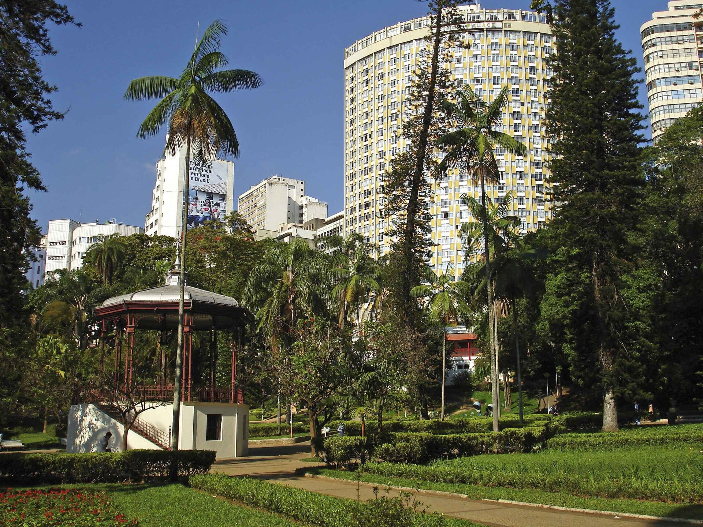
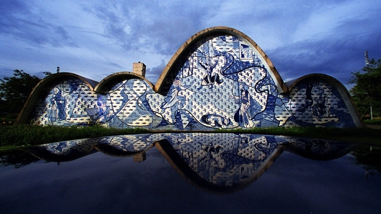

Belo Horizonte mistura com maestria a arquitetura modernista, uma vida cultural pulsante e uma das gastronomias mais apaixonantes do país. Como uma boa capital com alma de interior, as suas atrações principais revelam tanto a grandiosidade de monumentos reconhecidos pela UNESCO quanto a simplicidade deliciosa de um "copo sujo" e um bom petisco.
Principais Atrações:
Praça da Liberdade
Centro da cidade, com belas construções e eventos culturais.

Mercado Central
Mercado de produtos locais e comidas típicas.

Parque Municipal
Espaço verde com áreas de lazer e atividades culturais.

Conjunto Arquitetônico da Pampulha
Conjunto de prédios modernistas, incluindo o famoso Palácio das Artes.
